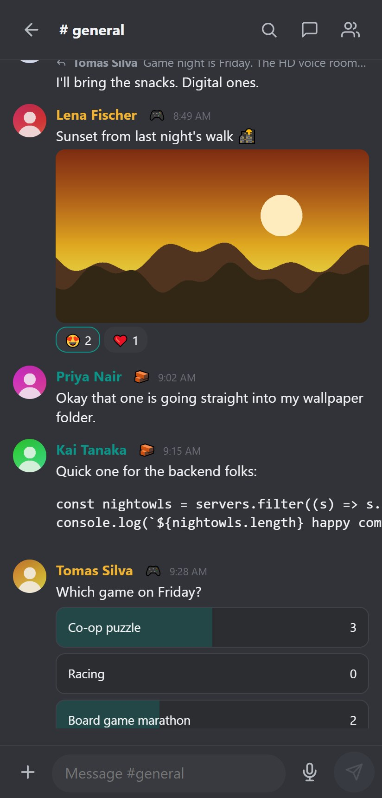

Web, asztali és telefonos kliensek
Mit kínál az egyes kliens, hogyan rögzíti a tanúsítványokat az asztali alkalmazás, és hogyan szolgálja ki a szerver a telefonos felületet.
Minden kliens ugyanahhoz a szerverhez beszél, és ugyanazokat az adatokat mutatja. Válaszd azt, amelyik az adott pillanatban kézre áll.
| Kliens | Mire a legjobb | Megjegyzések |
|---|---|---|
| Web | Mindenre, nincs mit telepíteni | Minden funkció, bármely modern böngészőben |
| Asztali (Windows) | Mindennapi használat az asztalnál | Tálcajelvény, natív értesítések, tanúsítvány-rögzítés |
| Android | Útközben | Telefonos felület, helyi értesítések, opcionális UnifiedPush |
Web
Nyisd meg a szerver címét. Jelentkezz be, és minden funkciót megkapsz. Ha szeretnéd, add hozzá a kezdőképernyőhöz a böngészőmenüből. A telefonos böngészők automatikusan a telefonos felületet kapják; a váltáshoz írd a cím végére a ?ui=desktop vagy ?ui=mobile részt.
Asztali alkalmazás (Windows)
Hordozható alkalmazás: csomagold ki és futtasd a MeshCrowd.exe fájlt. Az első indításkor szervercímet kér, például https://192.168.1.10:8443, majd ugyanazt a felületet tölti be, mint a böngésző, és kiegészíti:
- Tálcaikonnal élő olvasatlan jelvénnyel, a jelenléted színével. A színek a Beállítások, Asztali alkalmazás, Tálcaikon alatt testreszabhatók.
- Csatlakozási képernyővel, amely pörgő jelzést mutat, amíg a szerver válaszol. Ha nem érhető el (vagy 20 másodpercnél tovább tart), üres ablak helyett az Újrapróbálás és a Szerver módosítása gombot kínálja.
- Natív értesítésekkel, tálcára zárással és indítással a Windowsszal.
- Az operációs rendszer képernyő- és ablakválasztójával a képernyőmegosztáshoz.
- Meghívólinkek: a meghívóoldalról érkező
mcr://linkek az alkalmazásban nyílnak meg. Az alkalmazás minden indításkor regisztrálja magát hozzájuk, ami a mappa áthelyezése után is helyreállítja a bejegyzést; kikapcsolható a Beállítások, Asztali alkalmazás alatt. A linkek szerverváltás és csatlakozás előtt mindig rákérdeznek. AMeshCrowd.exemellettiregister-mcr-protocol.batésunregister-mcr-protocol.batkézzel ugyanezt teszi. - Első használatkori tanúsítvány-rögzítéssel önaláírt szerverekhez: először megerősíted az ujjlenyomatot, egy későbbi változás pedig figyelmeztetést vált ki. A nyilvános hatóság által kiállított tanúsítványt a rendes módon elfogadja.
Az alkalmazás a beállításait a futtatható fájl melletti data mappában tárolja, így az egész mappa élhet egy pendrive-on. Nincs benne szerver és webes fájl: a szerver frissítése a felületet is frissíti.
Fejlesztéshez forrásból: npm install, majd npm run electron.
Telefonos felület
A szerver telefonra tervezett felületet szolgál ki a /m/ címen, amelyet az Android-böngészők és az Android-alkalmazás használ. Négy füle van (Szerverek, Üzenetek, Értesítések, Te), hosszú nyomásos menüi, alsó lapjai, hangüzenetei, szavazásai, időzítése a küldés gomb lenyomva tartásával, perjeles parancs chipjei és hívásai. Telepítésről és értesítésekről az Android-alkalmazás útmutatóban olvashatsz.

Nyelv és témák
A nyelv és a téma fiókonként mentődik, ezért kliensről kliensre követ.